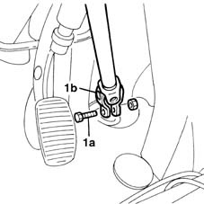
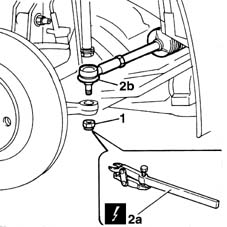
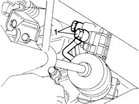
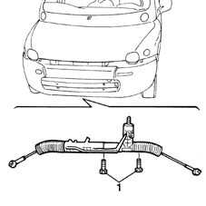

4130A10 power steering box - r+r - check tow-in if necessary separately - includes bleeding
- Path
- Procedures > 41 STEERING > 4130 POWER ASSISTED STEERING > 4130A power steering box > 4130A10 power steering box - r+r - check tow-in if necessary separately - includes bleeding
- Kind
- repair procedure (removal / refitting; the operation number is the code)
- Applies to
- all engines; all production periods
- Interactive page
- https://sloeber94.github.io/elrnDB-fMltpl/en/#/2891684
Applies to: all engines; all production periods
 Removing
Removing
 Refitting
Refitting4450B12 front or rear wheels (two) - r+r
1076A74 heat shield for exhaust pipe attachment to manifold - r r
1076B50 exhaust pipe attachment to engine - r + r
1008A44 rear rigid mount - r r
Using a suitable syringe, drain the fluid from the power assisted steering reservoir.
1. Working from the inside of the vehicle, undo the fixing bolt (1a) and disconnect the lower steering control shaft (1b) from the power steering box.

Applies to: all engines; all production periods
1. Undo the steering track rod end nut.
2. With the help of the tool (2a), remove the track rod ends (2b) from the housings in the steering knuckles.
 | Name | Country |
|---|---|---|
2a | Head extractor | 1.847.035.000 |

Applies to: all engines; all production periods
1. Disconnect the fluid inlet and outlet connectors from the power assisted steering box.

Applies to: all engines; all production periods
Place a hydraulic jack under the power assisted steering box as safe practice.
1. Undo the bolts fixing the power assisted steering box to the engine supporting crossmember, release the power assisted steering box pin from the lower steering control shaft, then move the power assisted steering box towards the right wheel arch housing and remove it from the engine supporting crossmember centre compartment.

Applies to: all engines; all production periods
Refitting
RemovingFit the power assisted steering box in the special housing in the lower engine supporting crossmember.
Tighten the two bolts fixing the power assisted steering box to the crossmember to torque.
 | Fastening | Component | Ø | Value (daNm) |
|---|---|---|---|---|
- | Bolt | POWER STEERING BOX | M10 | 7 |
Connect the fluid inlet and outlet connectors to the power assisted steering box.
Positin the track rod ends near the steering knuckles, securing them.
Tighten the steering track rod end nut.
| Fastening | Component | Ø | Value (daNm) |
|---|---|---|---|---|
- | Nut | ADJUSTABLE STEERING LINKS | M10 | 4 |
Working from inside the vehicle, connect the lower steering control shaft to the power assisted steering box and tighten the fixing bolt.
| Fastening | Component | Ø | Value (daNm) |
|---|---|---|---|---|
- | Bolt | STEERING SHAFT JOINT FASTENERS | M8 | 2.5 |
Refill the power assisted steering system with the appropriate fluid.
1008A44 rear rigid mount - r r
1076B50 exhaust pipe attachment to engine - r + r
1076A74 heat shield for exhaust pipe attachment to manifold - r r
Topics linked from this page (4)
- 1008A44 rear rigid mount - r r
- 1076A74 heat shield for exhaust pipe attachment to manifold - r r
- 1076B50 exhaust pipe attachment to engine - r + r
- 4450B12 front or rear wheels (two) - r+r